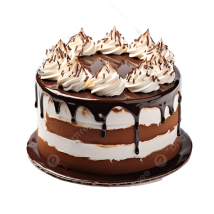

Introducåon Ingredients Steps
Chocolate cake cs a nch. mast dessert made cocoa jnowder. flour. eggs. buffer and sugar. •s perfect for any occaswn, esr,eaauy for chocolate lovers! 
DiscoverMcre Chocolate Cake
DiscoverMore
@2024 Chocolate Cake Reires